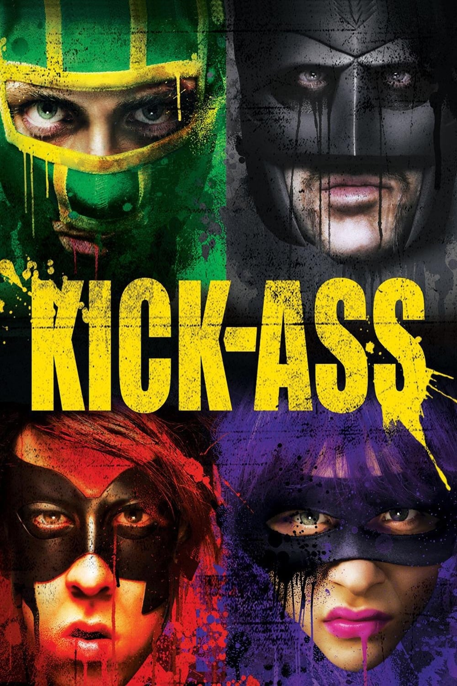

Мировая премьера: 16 апреля 2010
Слоган: Заткнись. Мочи.
Сюжет: Обычный подросток Дейв Лизевски любил комиксы и мечтал стать супергероем: он купил себе костюм, обзавёлся примитивным оружием и отправился на борьбу с хулиганами. В результате череды кровавых драк Дейв, он же "супергерой" Пипец, попадает на YouTube, превращаясь в интернетного идола и предмет для подражания миллионов почитателей! Но каково же было удивление Дейва, когда судьба свела его с "Папаней" и "Убивашкой", бывшим полицейским Деймоном Макриди и его одинадцатилетней дочуркой Минди, из которой тот сделал профессиональную машину для убийств. Теперь эта кровожадная команда планирует "вынос" целого мафиозного клана под предводительством жестокого и беспринципного мафиози – Фрэнка Д'Амико.
Режиссёр: Мэттью Вон
В основе: Комикс "Мордобой" (США, 2008-2010, авторы – Марк Миллар и Джон Ромита мл.)
Серия: Пипец
В ролях: |
Аарон Джонсон | Дейв Лизевски / Пипец |
| Марк Стронг | Фрэнк Д'Амико | |
| Кристофер Минц-Плассе | Крис Д'Амико / Кровавый Угар | |
| Николас Кейдж | Деймон Макриди / Папаня | |
| Хлоя Грейс Морец | Минди Макриди / Убивашка | |
| Майкл Рисполи | Джо | |
| Линдси Фонсека | Кейти Дома | |
| Кларк Дьюк | Марти Айзенберг | |
| Эван Питерс | Тодд Хейнс | |
| Стю Райли | Стю | |
| Омари Хардвик | Сержант Маркус Уильямс | |
| Ксандер Беркли | Детектив Виктор "Вик" Гиганте | |
| Гэррет М. Браун | Мистер Лизевски | |
| Кори Джонсон | Спортивный бандит | |
| Декстер Флетчер | Коди | |
| Джейсон Флеминг | Швейцар | |
| Рэндалл Батинкофф | Тре Фернандес | |
| Янси Батлер | Энджи Д'Амико | |
| Адриан Мартинес | Имбирный бандит |
Бюджет: $ 30 млн.
Кассовые сборы в США: $ 48 млн.
Кассовые сборы в мире: $ 96 млн.
Продолжительность: 1 ч. 51 мин.
Рейтинг: 7.6